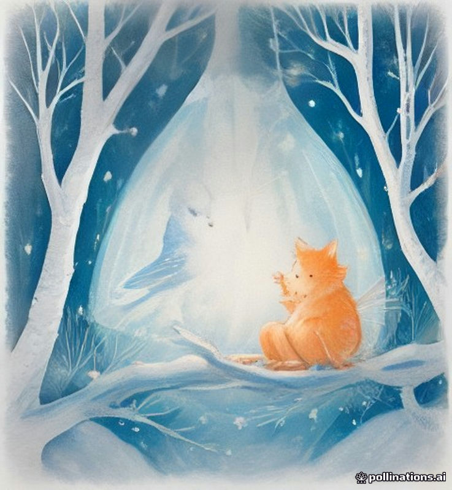
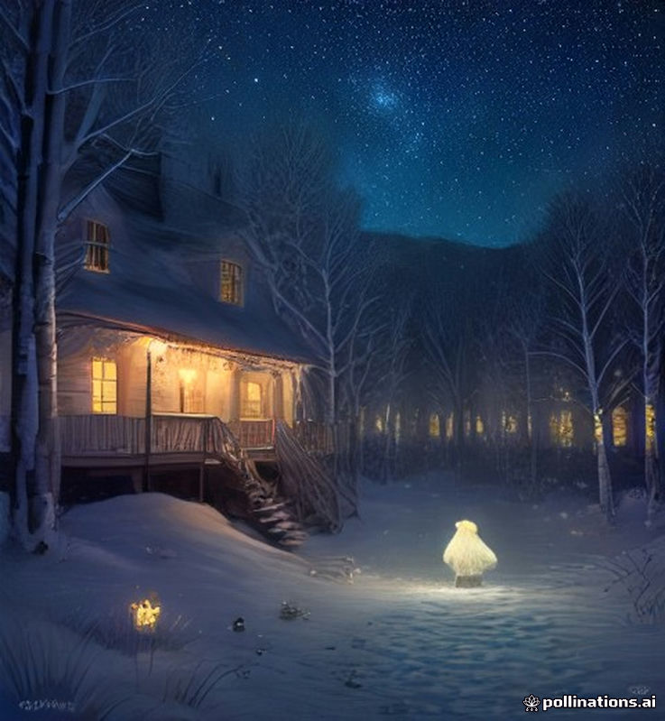
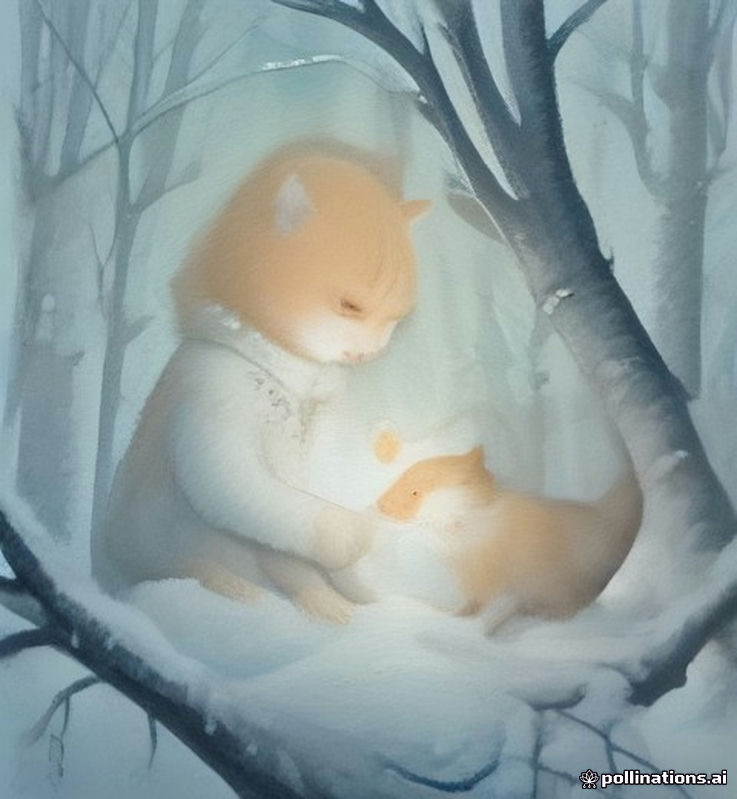
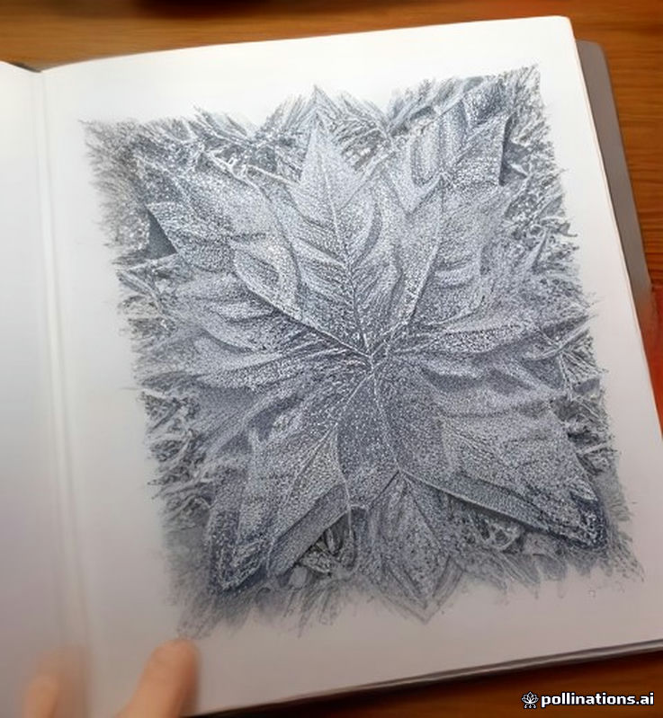
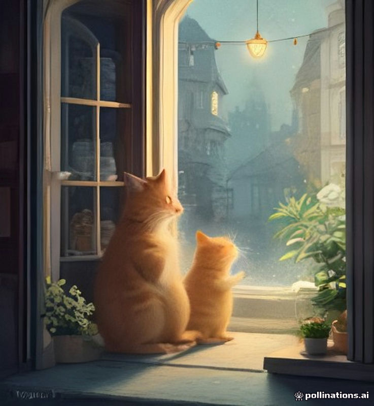

High up in the icy birch canopy, a pale frost-moth named Silvershimmer dreams of leaving a warm, lasting mark on the quiet winter town below.

Deep in the silent winter woods beyond Loki's town, a tiny frost-moth named Silvershimmer fluttered among the frosted birch trees. While other moths loved bright lanterns and flickering candle flames, Silvershimmer held a quiet, secret wish. She did not care for burning fires that sizzled away in an instant. Instead, she longed to leave something warm and comforting behind—something beautiful that would never melt away when the morning sun peaked over the snow-dusted roofs of the sleeping plaza.

One foggy afternoon, Loki—an orange tabby cat wearing his favourite teal scarf—walked into the snowy woods alongside Pip, the tiny grey mouse perched happily on his head. They were searching for pinecones to make winter decorations. Pip suddenly squeaked, pointing up at a low branch where Silvershimmer sat flutter-shivering. "Look at her wings, Loki!" whispered Pip softly. "They look just like spun silver glass!" Silvershimmer tilted her icy antennae, rustling her frost-dusted wings with a soft, chiming hum that sounded like tiny winter bell chimes in the wind.

Loki smiled a warm cat smile and gently held out a sturdy, dry maple leaf from his coat pocket. "You must be chilly, little friend," Loki purred softly. Silvershimmer alighted delicately onto the leaf. Using tiny taps of her frost-tipped feet, she traced shimmering patterns of permanent silver ice crystals across the leaf's edges, turning the ordinary brown paper leaf into a glowing, crystal-laced coaster that did not melt in Loki's warm paws. Pip clapped his tiny paws in delight. Her secret wish had finally come true.

Loki and Pip brought the magical frost-laced leaf back to the town square, placing it carefully on the window ledge of the bakery for everyone to admire. Silvershimmer flew contentedly above, knowing her quiet magic brought warmth and cheer to the cozy town below. Every evening, when the cool air sweeps in, the leaf glows with a soft, comforting luminescence, reminding every passerby that even the coldest frost can share the warmest heart.